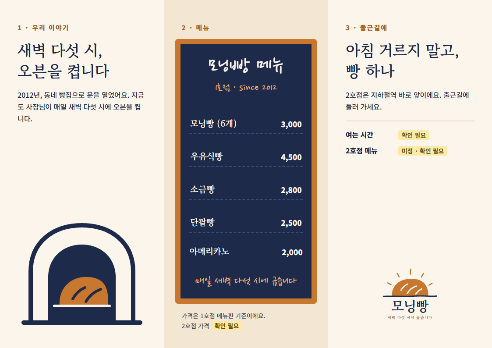
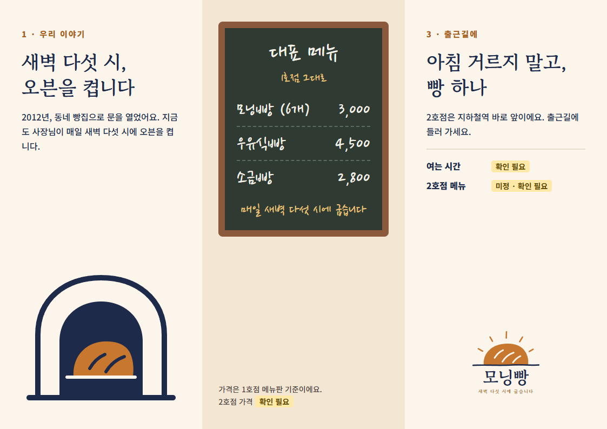
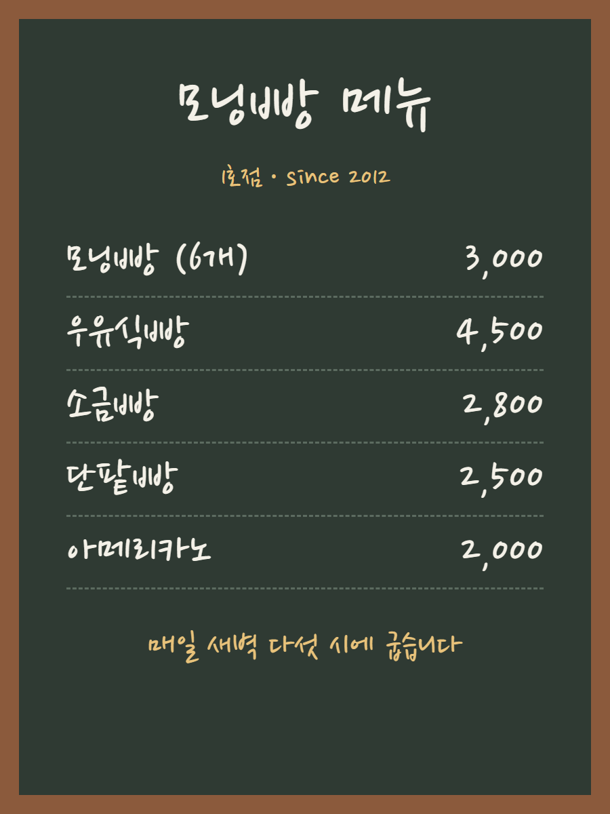
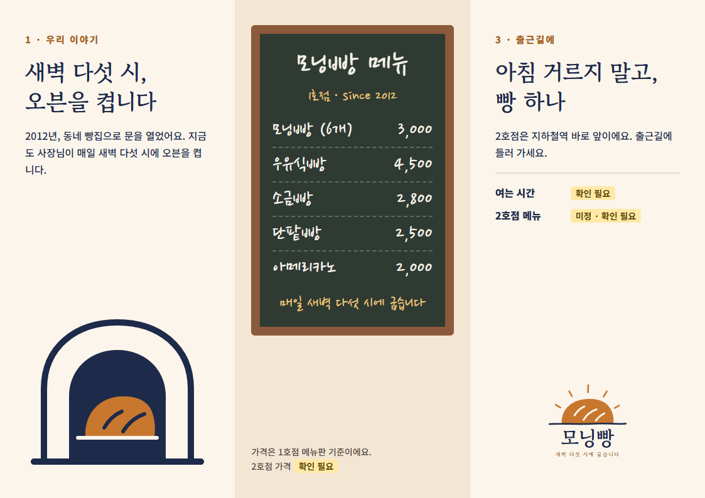

실제 Claude 결과물 · 브로셔 안쪽면

A + B + 1호점 메뉴판
A 안쪽면
B 안쪽면


↓

실제 결과 · 섞기
참고 사진 · 1호점 메뉴판

→

실제 결과 · 사진 참고
예시 화면 · 지시문은 실제로 쓴 것
비평가, 사장님 보기 전에
이거 깎아내려 봐. 세 개만.
이거 깎아내려 봐. 세 개만.
사장님보다 먼저
비평 1
칠판 면만 손글씨에 초록·나무색이라, 다른 집 전단 같아요.
칠판 면만 손글씨에 초록·나무색이라, 다른 집 전단 같아요.
비평 2
로고는 두 색인데, 초록과 나무색이 새로 들어왔어요.
로고는 두 색인데, 초록과 나무색이 새로 들어왔어요.
비평 3
칠판 아래가 텅 비어서 덜 끝난 것 같아요.
칠판 아래가 텅 비어서 덜 끝난 것 같아요.
비평 내용은 실제로 받은 것
비평 전
비평 반영
→
실제 결과 · 비평 반영
오늘의 결론
섞고 비튼 다음엔
먼저 깎아내린다
먼저 깎아내린다